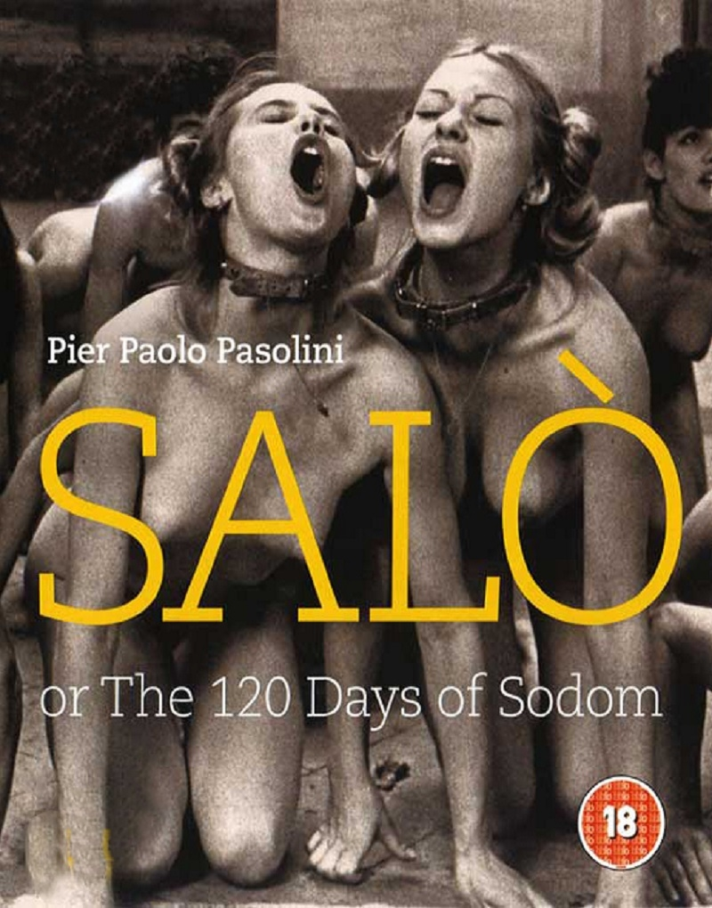
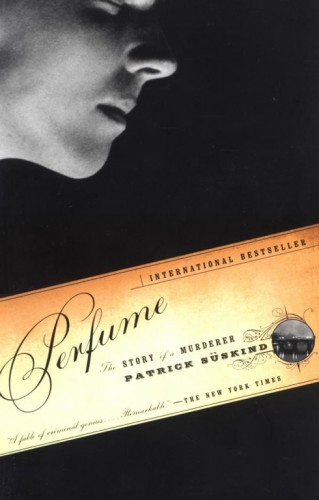

Heliogabalus Elagabalus
Roman Emperor
I am known for perverse and decadent behavior with regard especially to sex, religion, and food.
Check Me Out
My Favorite Movies
IrreversibleThe camera looks on unflinchingly as a woman is raped and beaten for several long, unrelenting minutes, and as a man has his face pounded in with a fire extinguisher, in an attack that continues until after he is apparently dead. |
|
|  |
Salò, or The 120 Days of SodomMarquis de Sade’s eighteenth-century opus of torture and degradation to Fascist Italy in 1944 remains one of the most passionately debated films of all time, a thought-provoking inquiry into the political, social, and sexual dynamics that define the world we live in. |

|
Tokyo DecadenceA submissive hooker goes about her trade, suffering abuse at the hands of Japanese salarymen and Yakuza types. She's unhappy about her work, and is apparently trying to find some sort of appeasement for the fact that her lover has married. |
My Favorite Books

|
Naked LunchThe reader follows the narration of junkie William Lee, who takes on various aliases, from the U.S. to Mexico, eventually to Tangier and the dreamlike Interzone. The book was banned in Boston in 1962 due to obscenity (notably child murder and acts of pedophilia), making it among the last works to be banned in that city. |
|  |
PerfumeIn the slums of eighteenth-century France, the infant Jean-Baptiste Grenouille is born with one sublime gift — an absolute sense of smell. One day he catches a hint of a scent that will drive him on an ever-more-terrifying quest to create the "ultimate perfume" — the scent of a beautiful young virgin. |

|
Decay of the AngelThe time is the late 1960s. Honda, now an aged and wealthy man, discovers and adopts a sixteen-year-old orphan, Toru, as his heir, identifying him with the tragic protagonists of the three previous novels, each of whom died at the age of twenty. Honda raises and educates the boy, yet watches him, waiting. |